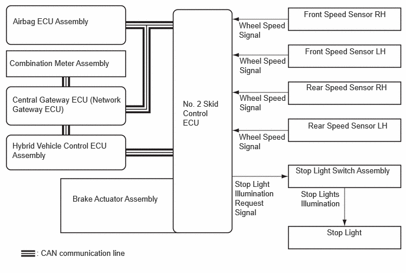

- The vehicle speed is below approximately 10 km/h.
- Operation continues for a certain period of time.
- After operating, the accelerator pedal is depressed a certain amount or more.
| Last Modified: 10-07-2025 | 6.11:8.1.0 | Doc ID: NM100000002K3AD |
| Model Year Start: 2024 | Model: Tacoma HV | Prod Date Range: [03/2024 - ] |
| Title: BRAKE CONTROL / DYNAMIC CONTROL SYSTEMS: BRAKE CONTROL SYSTEM (for HEV Model): SECONDARY COLLISION BRAKE; 2024 - 2026 MY Tacoma HV [03/2024 - ] | ||
SECONDARY COLLISION BRAKE
SYSTEM CONTROL
(a) The secondary collision brake system lessens damage from a secondary collision by controlling the automatic brakes and stop light illumination after a collision occurs.
(b) When the airbag ECU assembly detects a collision and operates the airbags, it sends a collision detection signal to the No. 2 skid control ECU. When the No. 2 skid control ECU receives a collision detection signal, it determines that operation can start, operates the brake actuator and performs braking. Simultaneously, the No. 2 skid control ECU sends a stop light illumination request to the stop light switch assembly, illuminating the stop lights.
(1) Secondary Collision Brake Operation Start Condition
- When a collision detection signal is received
from the airbag ECU assembly while the vehicle speed
is approximately 10 km/h or more, the secondary
collision brake starts operating.
HINT:
When a system malfunction is displayed on the multi-information display or the system is in test mode or maintenance mode, the secondary collision brake is prohibited from operating.
(2) Secondary Collision Brake Operation Cancellation Condition
- If one of the following conditions is detected,
operation of the secondary collision brake is
canceled.
Secondary Collision Brake Operation Cancellation Conditions